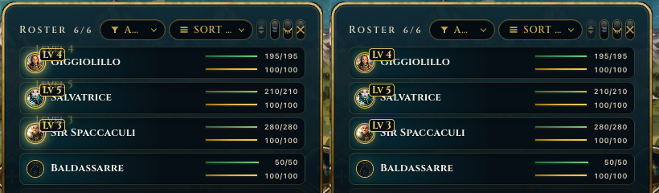
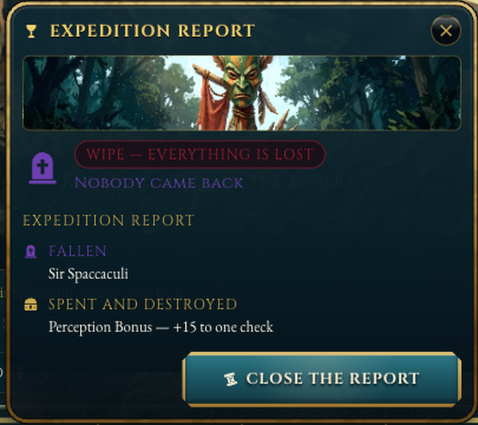
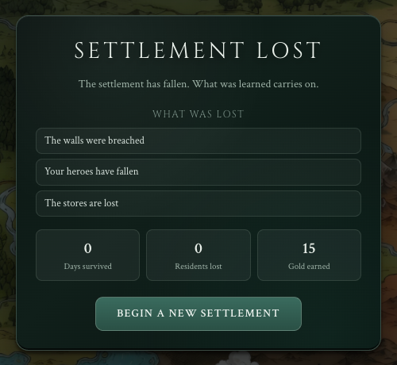
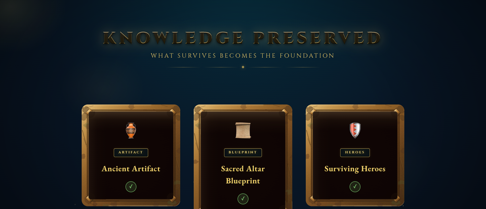
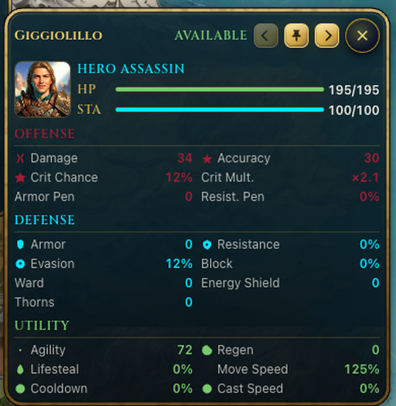
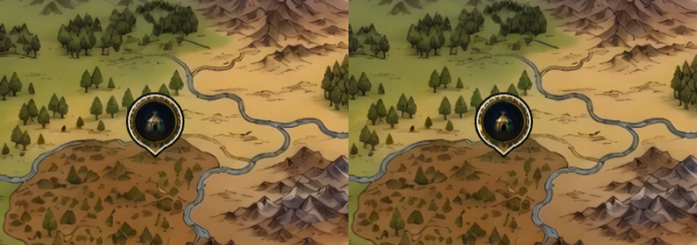
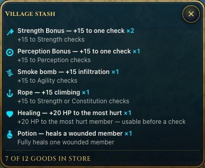
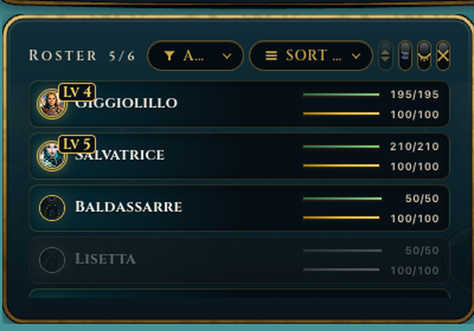

Otto decisioni estetiche: i tre momenti del ciclo (crescita, sconfitta, caduta), l'eredità per la prossima run, e i quattro fork aperti dal secondo giro (F5). Ogni riga mette la baseline reale (ritaglio dall'harness) accanto a due direzioni materialmente diverse, nessuna raccomandata. Token della skin base; niente cerchi con simbolo, niente semaforo verde/rosso (guida HUD 6b): il pericolo è brace, il chiuso è ferro, il valore è ottone.
Ricerca: le fonti trovate su meta-progressione e schermate di fine run sono generiche (nessuna analisi UI di Rogue Legacy, Darkest Dungeon, Against the Storm, Frostpunk). Unico principio solido: la meta-progressione deve sostenere il gioco senza banalizzarlo, e il giocatore deve capire se è migliorato lui o se ha solo sbloccato potere. Le opzioni sotto rendono visibile la differenza.
LVL · Level-up dell'eroe (mock dal Director)
Oggi: senza roster aperto non succede nulla; con il roster una scritta fantasma «LEVEL 4» per 0,4 s, e il livello non cambia. Entrambe le opzioni fanno salire davvero il numero (4 → 5) e aprono il roster da sole.
Baseline

Sinistra 400 ms, destra 4 s: badge invariato.
A · Sigillo sulla scheda
Giggiolillo
Hero assassin
5
+1 Agility · +12 HP
Sir Spaccaculi
Hero warrior
3
Tutto nel roster: la scheda si accende d'oro, lo scudo del livello gira e mostra il numero nuovo, un'iscrizione sale con i guadagni. 2,5 s, non interrompe il gioco.
B · Cerimonia
Giggiolillo sale al livello V
Agilità72 → 78
Punti vita195 → 207
«Il bosco ora le parla prima che ai goblin.»
Prosegui
Una lastra al centro con un sigillo che si imprime col numero romano, i guadagni veri e una riga di carattere. Interrompe per un momento: è una ricompensa, non una notifica.
Asse
A Sigillo
B Cerimonia
Peso della ricompensa
leggero
alto
Interruzione del gioco
nessuna
un clic
Più level-up insieme (fine spedizione)
in parallelo sulle schede
una lastra per eroe
Costo
basso (estende SP-5)
medio
EXP · Sconfitta della spedizione (rapporto «WIPE»)
Oggi: lastra trasparente (si legge il testo dietro), due titoli «EXPEDITION REPORT», chip rosso su rosso, lapide viola. In più serve un pulsante Director «Expedition lost» per metterla in scena senza perdere davvero.
Baseline

Testo della finestra visibile attraverso la lastra.
A · Lapidi sulla scena spenta
Nessuno è tornato
SIR SPACCACULI† giorno 41
Perduto con loro
✦
≋
Torna al villaggio
Lastra opaca. La scena dell'ultimo scontro desaturata, una lapide di pietra incisa per ogni caduto, gli oggetti persi come tessere incrinate a brace. Un titolo, un'azione.
B · Cronaca bruciata
Cronaca della spedizione
Giorno 3 — le tracce portano a nord.
Giorno 9 — l'accampamento è più grande del previsto.
Giorno 14 — ferro e cenere.
Sir Spaccaculi non è tornato.
Chiudi la cronaca
Una pagina di pergamena con i bordi bruciati: la run raccontata in poche righe, una per fase importante, e i nomi dei caduti barrati a inchiostro. Il rapporto diventa memoria.
Asse
A Lapidi
B Cronaca
Leggibilità a colpo d'occhio
alta
media (si legge)
Racconto della run
minimo
alto
Coerenza con la HUD
lastra di famiglia
nuova superficie (pergamena)
Vittoria con lo stesso schema
sì (stendardi al posto delle lapidi)
sì (stessa pagina, inchiostro d'oro)
SET · Caduta dell'insediamento (fine run)
Oggi la card esiste ma: invisibile con la finestra quest aperta, «0 giorni» al giorno 3, perdite scritte fisse in config. Entrambe le opzioni usano dati veri e finiscono nell'eredità (LEG).
Baseline

Card su iride scura; pannello Director sopra.
A · Epitaffio sull'iride
L'insediamento è caduto
Giorno 41 · le Marche dell'Est
41giorni
2caduti
132oro
Le mura hanno ceduto al giorno 41. Sir Spaccaculi cadde a Ferro e Cenere.
Ciò che resta →
La direzione attuale portata nella famiglia: stessa iride ossidata sulla mappa, numeri veri, perdite che citano ciò che è successo davvero, e l'azione porta all'eredità invece di ricominciare subito.
B · La mappa si spegne
Giorno 41 — le mura cedono
41 giorni · 2 caduti · 132 oro
Ciò che resta →
Nessuna card: la mappa intera si spegne verso il villaggio, che si incrina a brace mentre cade cenere; una sola striscia di pergamena dice giorno e numeri. Più cinema, meno lettura.
Asse
A Epitaffio
B Mappa
Peso emotivo
medio
alto
Informazioni leggibili
numeri + perdite
solo numeri
Riuso del codice esistente
alto (SettlementLostOverlay)
basso (nuova regia)
Rischio di sembrare il trailer
basso
alto (va bene per il teaser)
LEG · Eredità: ciò che porti nella prossima run
Oggi esiste solo nel trailer (TrailerLegacy: tre carte con spunta verde) e in una V2 mai montata (TrailerLegacyV2, «The Preservation Table»). Va portata su /game come mock, raggiungibile dalla caduta (SET) e da un pulsante Director.
Baseline (trailer)

Spunte verdi, icone tipo emoji, nessuna scelta.
A · La tavola della preservazione
Ciò che sopravvive diventa fondamenta
ReliquiaIl totem goblin: +10% bottino
ProgettoPalizzata di livello II già nota
EroeGiggiolillo torna, livello V
Fonda un nuovo insediamento
La V2 del trailer portata in gioco: tre forme di eredità (materia, sapere, memoria viva), ognuna fissata da un sigillo d'oro invece della spunta. Nessuna scelta: il gioco ti dice cosa resta.
B · Il reliquiario: scegli cosa salvare
Il reliquiario
Salva 2 di 5. Il resto si perde con le mura.
Scelti: Giggiolillo, Totem goblin
Sigilla e ricomincia
Una scelta: tra eroi sopravvissuti, reliquie e progetti ne salvi pochi. La caduta diventa una decisione, e la prossima run comincia da quella decisione.
Asse
A Tavola
B Reliquiario
Agency del giocatore
nessuna
una scelta vera
Fedeltà al trailer (teaser)
alta (V2)
nuova
Rischio di design (meta-progressione)
basso: mock narrativo
tocca il bilanciamento (va deciso col game design)
Costo come mock
basso
medio
FAM-1 · Le quattro schede teaser fuori famiglia (scheda eroe, stash, mercante, tooltip edifici)
Oggi usano il font di sistema, il ciano e il semaforo (F5 §1). L'esempio è la scheda eroe; la stessa scelta vale per le altre tre.
Baseline

Sans, tre colori di categoria, pallini, 9 righe a zero.
Cinzel + EB Garamond, ottone. Tre virtù che contano per le quest in grande, il resto in una riga; gli zeri non si mostrano. Il colore di categoria sparisce.
B · Schede di carta
Giggiolillo
Assassina, livello IV · 3 spedizioni, 1 cicatrice
Agile 72 · Forte 34 · Sfuggente 12%
«Tornò dal bosco di Hollow Wood con la lama pulita e la voce rotta.»
Le quattro superfici teaser diventano «carte»: pergamena e inchiostro, un'identità propria e coerente (dossier, registro, listino, scheda edificio). Si distinguono dalla HUD perché sono documenti, non strumenti.
Asse
A Famiglia Roster
B Carta
Coerenza con la guida HUD §1
piena
eccezione dichiarata
Personalità degli eroi
media
alta
Densità di informazione
alta
bassa
Costo (4 superfici)
basso: token esistenti
medio: nuova materia
POI-T · Il POI dice cosa è
Oggi il marker è muto (in hover cambia appena). La guida vieta il testo sul marker, non un'etichetta al passaggio. Il tooltip delle regioni («Whispering Woods») mostra che la mappa sa già parlare.
Baseline

Riposo / hover: nessuna differenza utile.
A · Cartiglio inciso al passaggio
STERMINIO DEI GOBLINPERICOLO ALTO · 22 GIORNI
Al passaggio del mouse un cartiglio di pergamena come quello delle regioni: nome e rischio in due parole. Sul marker resta solo il sigillo.
B · La sagoma dice il rischio
basso
alto
letale
Niente testo: il sigillo cresce di corna e passa dall'ottone alla brace col pericolo (le etichette qui sotto servono solo al mockup). Si legge da lontano, ma va imparato.
Asse
A Cartiglio
B Sagoma
Chiarezza al primo sguardo
nome + rischio
solo rischio
Mappa pulita a riposo
sì
sì
Leggibilità da lontano / molti POI
uno per volta
tutti insieme
Tocca il Sigillo approvato (PLAN-058)
no
sì (serve ruling S11)
INV-1 · Un oggetto, tre posti (bisaccia, magazzino, mercante)
Oggi lo stesso oggetto ha tre aspetti: tessera icona nel tray, riga sans ciano nello stash, riga col prezzo nel mercante.
Baseline

Stash: sans, ciano, «×2» accanto al nome.
A · La carta oggetto, uguale ovunque
Bisaccia
×2
Elisir di forza
+15 a una prova di Forza
Mercante
×3
Pozioni curative
Una ferita si chiude prima della curva
9 ◈
Una sola carta: icona incisa, nome in Cinzel, effetto in Garamond, quantità sul bordo; il mercante aggiunge solo il prezzo. Si impara una volta.
B · Riga comune, tre vesti
Bisaccia (tessera)
Magazzino (riga)
Elisir di forza×2
Mercante (riga + prezzo)
Pozioni curative9 ◈
Tre vesti per tre usi (tessera compatta da trascinare, riga d'inventario, riga di listino) ma la stessa icona incisa, lo stesso font e lo stesso ottone. Più denso, meno ripetitivo.
Asse
A Carta
B Riga comune
Riconoscibilità tra superfici
massima
alta
Densità (stash lungo, bisaccia stretta)
bassa
alta
Descrizione dell'effetto sempre visibile
sì
in tooltip
Costo
medio
basso
DEATH-1 · L'eroe caduto
Oggi, dopo il «WIPE», Sir Spaccaculi sparisce dal roster («5/6») senza traccia, mentre il rapporto lo chiama «FALLEN».
Baseline

Il caduto non c'è più; Lisetta è grigia senza spiegazione.
A · La lapide resta nel roster
Giggiolillo
Disponibile
Sir Spaccaculi
Cadde a Ferro e Cenere, giorno 41
Il caduto resta in fondo al roster per il resto della run: ritratto in grigio, bordo tratteggiato, l'epitaffio con luogo e giorno. Non si può trascinare.
B · La sala dei caduti
Sala dei caduti
Sir Spaccaculi, livello III
Ferro e Cenere · giorno 41 · 4 spedizioni
dal menu · «Memoriale»
Il roster resta pulito; i caduti vanno in un memoriale (voce del menu), una pagina per ogni eroe con la sua storia. È lì che l'eredità (LEG) può pescare «chi ricordare».